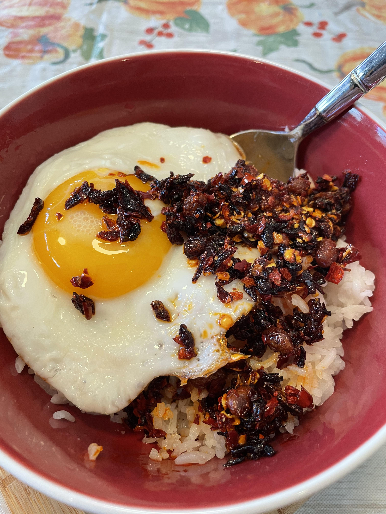

Egg Rice Lao Gan Ma
Let the taste of Szechuan cleanse your soul

This quick and easy recipe will get you hooked with its deep flavors and convenience.
Ingredients
- 3 dl of jasmin rice
- 3-4 eggs
- 1 hefty tbsp of Lao Gan Ma
Instructions
- Cook the rice according to instructions on packet
- Fry the eggs sunny side up, you want the yolk to be runny. Alternatively you
could boil the eggs. The important part is that the yolks are runny.
- Put rice into a bowl, top with the egg and lastly with the Lao Gan Ma. Devour.